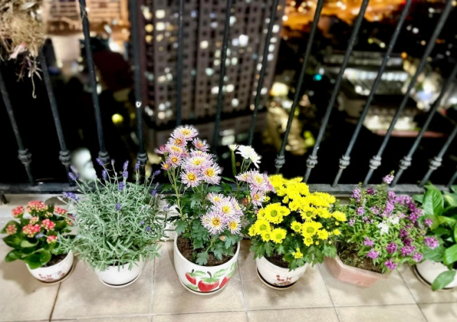

Diễn viên Thanh Hương sinh năm 1988 nổi tiếng khi tham gia các phim: Người phán xử, Quỳnh Búp Bê, Sống chung với mẹ chồng, Sinh tử, Những ngày không quên, Mùa hoa tìm lại, Anh có phải đàn ông không...
So với diễn viên nữ ở Việt Nam, diễn viên Thanh Hương sở hữu chiều cao đáng mơ ước: 1,7m. Ở tuổi 17, Thanh Hương từng thử sức trên đấu trường sắc đẹp: “Năm 2006, tôi đang là sinh viên năm thứ nhất Trường Cao đẳng Nghệ thuật Hà Nội, nghe tin ở quê nhà có cuộc thi Hoa khôi Hải Dương, liền ghi tên tham dự, mong có dấu ấn trong thời thanh xuân”. Không ngờ, Thanh Hương được xướng tên ở ngôi vị Á hậu 1 của cuộc thi. Người đăng quang năm đó chính là Hương Giang, từng được bầu chọn là “Hoa hậu đẹp nhất châu Á 2009”.
Thời tiết hiện tại là 32oC theo cách tính Log1020
